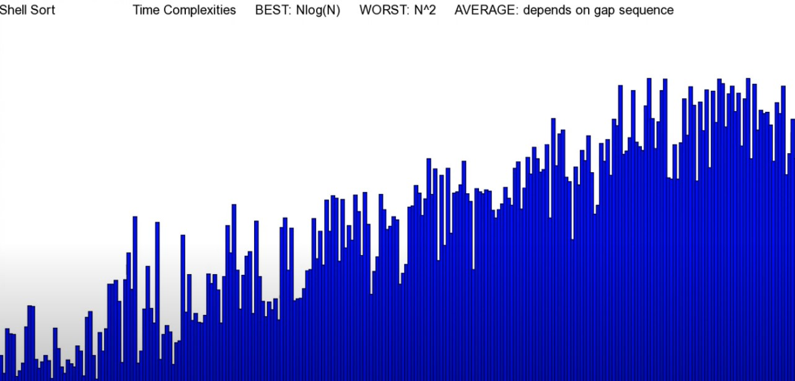
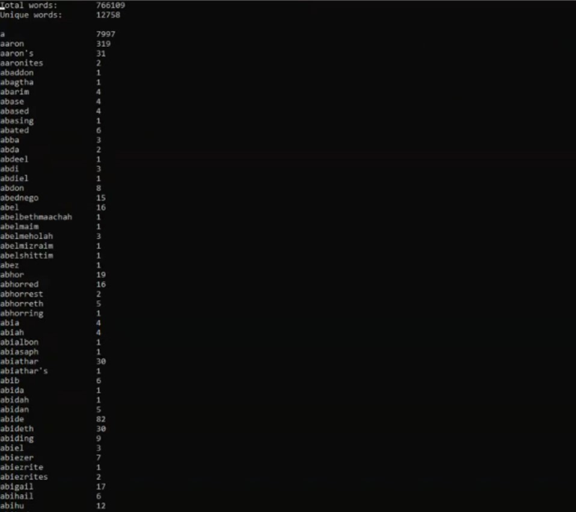
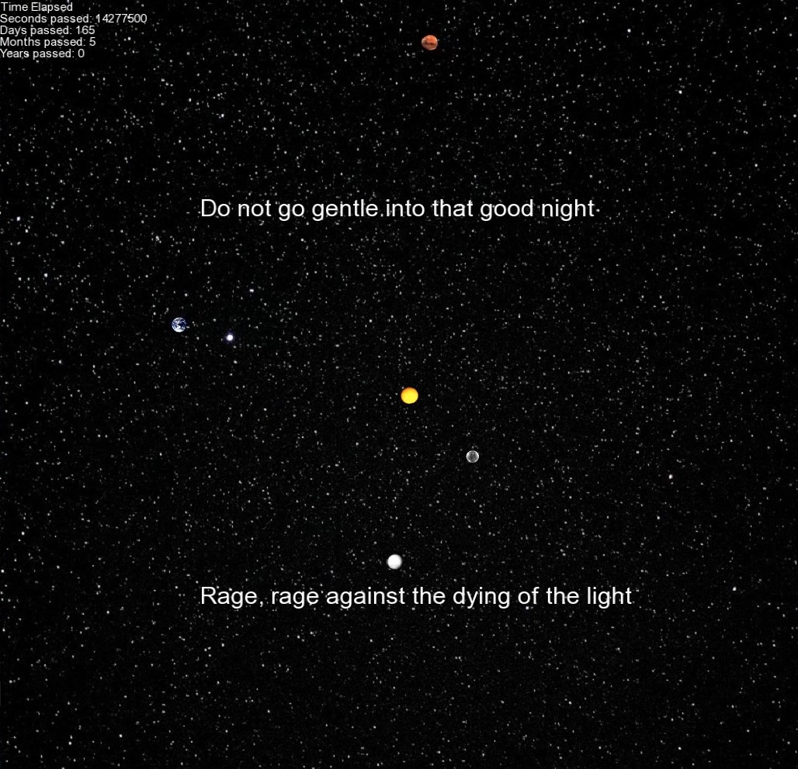

WELCOME TO MY PORTFOLIO WEBSITE
ABOUT
- I am a software engineer who graduated with a B.S. in Computer Science and a minor in Mathematics from the University of Massachusetts Lowell.
- I have experince with C, C++, Linux, and creating web applications with various technology stacks.
- Review my GitHub portfolio for various projects I've completed.
PROJECTS
Matrix Calculations - C
Console application to perform various matrix calculations - multiplication, addition, subtraction, power, transpose, determinant, and inverse.
 Video Demo
Repository
Video Demo
Repository
Sorting Algorithms Visualizer - C++ and SFML
Provides a visual representation of bubble sort, selection sort, insertion sort, shell sort, heap sort, quick sort, merge sort, bucket sort, and radix sort.

Video Demo RepositoryFile Words Analysis - C
Console application written in C to read from any file and generate two output files. The first displays the total number of words, the total number of unique words, and each individual word in least to greatest lexicographic order along with its total number of occurences. The second contains a visual representation of the hash table in memory along with a summary of its performance at the end. The hash table was implemented with separate chaining. To demonstrate the program's capabilities, a text file containing the entire bible was used since it's a very long book.\

Video Demo RepositorySolar System Simulation Interstellar Theme - C++
Simulation of the solar system inspired by the movie Interstellar. The relative position and movement of the planets accurately models the real solar system.

Video Demo RepositoryCapstone Project - React and Django
Was tasked by a company to deliver a proof-of-concept solution for reverse engineering a PC application they had into a web application. The project used React and Django. The repository is private since some of the information is sensitive to the company.
Computer Science Resources
A series of documents I developed during my work as a tutor to help students in the various computer science courses that I tutored. In general, the documents focus on the C and C++ programming languages, and the most significant documents I made were a Makefile guide and one about data structures.
RepositoryMath Resources
A series of documents I developed during my work as a tutor to help students in the various math courses I tutored. The documents are for calculus I-III and discrete math.
Repository